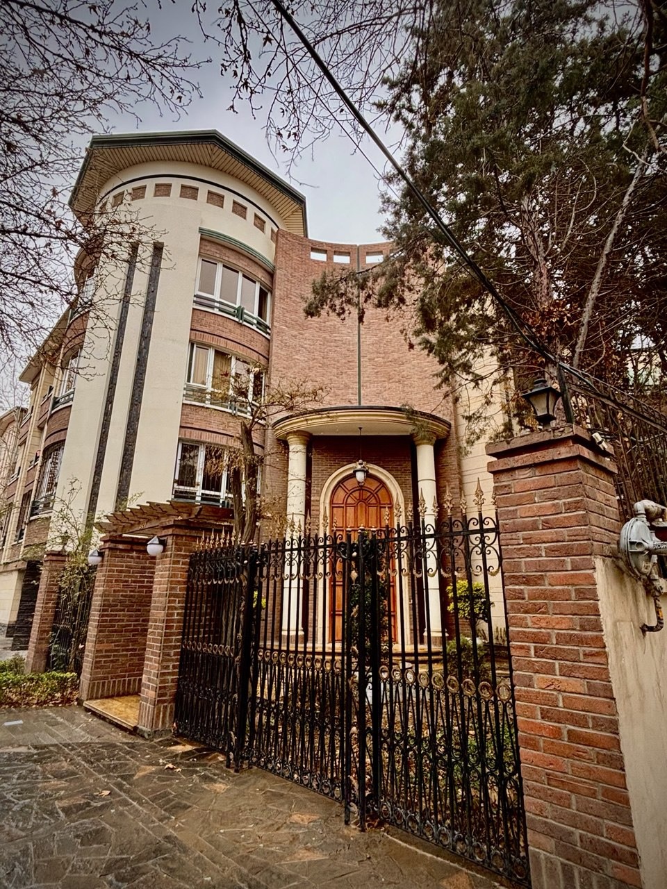
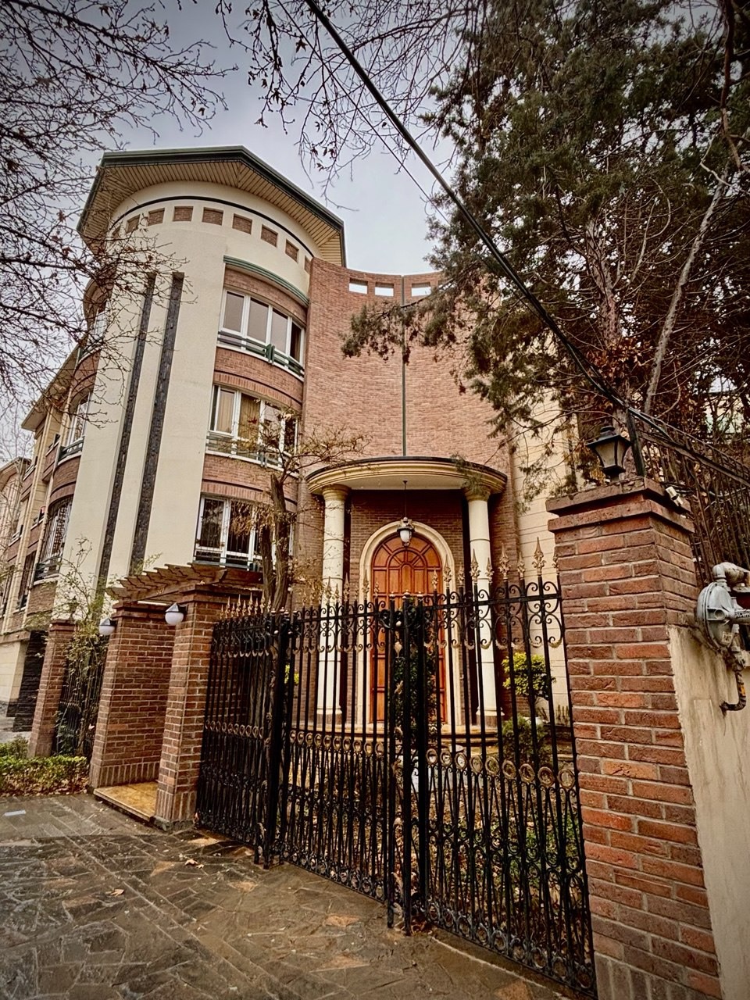

راهنمای کاربردی برای مستأجران و موجران در منطقهای خاص و پرتقاضا
نکات مهم در اجاره ملک در مهرشهر کرج
مهرشهر یکی از بهترین مناطق کرج برای سکونت است؛ اما اجارهنشینی در این منطقه هم نکات خاص خودش را دارد. در این صفحه، نکات مهمی را با شما در میان میگذاریم که اگر مالک یا مستأجر هستید، میتوانند تجربهی اجاره را برایتان سادهتر، امنتر و حرفهایتر کنند. چه تازهوارد مهرشهر باشید، چه سالها در این منطقه زندگی کرده باشید، آگاهی از جزئیات حقوقی و عرفی اجاره، مسیر شما را هموارتر میکند. در ادامه، مهمترین نکاتی را مرور میکنیم که به شما کمک میکنند با اطمینان و دید باز، وارد فرآیند اجارهنشینی یا اجارهداری شوید.
قرارداد مطمئن
رسمی، شفاف و قابل پیگیریاملاک متنوع
سوئیت تا ویلاارتباط انسانی
همکاری محترمانه 


قیمتگذاری واقعی و منصفانه؛ نقطهی شروع یک قرارداد خوب
در مهرشهر، قیمت اجاره ملک به عوامل زیر بستگی دارد:تنظیم قرارداد رسمی و دقیق؛ امنیت دوطرفه
چه موجر باشید، چه مستأجر، هیچوقت قرارداد دستی یا شفاهی نبندید. قرارداد باید:شناخت مالک و مستأجر؛ از روی سند و مدارک، نه فقط حرف
قبل از امضای قرارداد، مطمئن شوید که:وضعیت ملک را بررسی کنید؛ قبل از ورود یا تحویل
برای جلوگیری از سوءتفاهم، در زمان تحویل کلید:
• یک لیست کتبی از وسایل (در صورت مبله بودن) تهیه کنید
• کنتورهای آب، برق، گاز را یادداشت و عکس بگیرید
• وضعیت دیوار، کابینت، سرویس بهداشتی و شیرآلات را بررسی کنید
در پایان قرارداد نیز ملک را با همان وضعیت اولیه تحویل دهید تا از کسر ودیعه جلوگیری شود.
اجاره در مهرشهر برای چه کسانی مناسب است؟
• خانوادههایی که آرامش و فضای سبز برایشان مهم است
• افرادی که در تهران کار میکنند و کرج را مقرونبهصرفهتر میدانند
• کارمندان یا مدیرانی که مایلاند در محیطی آرام و سطح بالا زندگی کنند
مهرشهر به دلیل تنوع در نوع ملک، از سوئیت گرفته تا ویلاهای لوکس، گزینههای متنوعی برای اجاره دارد که تیم ایران بوم برای خدمت رسانی به شما در این زمینه آماده است .
اجاره ملک فقط یک قرارداد مالی نیست؛ شروع یک ارتباط انسانیست. با رعایت اصول، صداقت و شفافیت، میتوان تجربهای امن و محترمانه برای هر دو طرف رقم زد.
نکات طلایی خرید ملک در مهرشهر کرج
اگر تصمیم دارید در مهرشهر سکونت داشته باشید یا قصد سرمایهگذاری در این منطقهی خوش آبوهوا و روبهرشد را دارید، این صفحه برای شماست. ما در اینجا نکات کاربردی، تجربی و کاملاً محلی را در اختیارتان قرار میدهیم تا با آگاهی و آرامش، بهترین تصمیم را بگیرید.

مهرشهر را بشناسید؛ انتخاب آگاهانه، خرید مطمئن
مهرشهر فقط یک محله نیست؛ مجموعهای از فازهای متنوع با سبک زندگی و قیمتهای متفاوت است. قبل از هر چیز، باید بدانید دنبال چه چیزی هستید:
• اگر دنبال آرامش، کوچههای پهن و خانههای ویلایی هستید: فاز ۱ و ۲ انتخاب خوبی هستند.
• اگر میخواهید به مراکز خرید و خیابان اصلی (بلوار ارم) نزدیک باشید: فاز ۳ و ۴ گزینههای خوبی دارند.
• اگر دنبال سرمایهگذاری هستید و رشد قیمتی برایتان مهم است: بخشهایی از فاز ۵ به بعد در حال توسعهاند.
قیمت منطقهای را دقیق بشناسید؛ فریب قیمتسازی را نخورید
در بازار پرنوسان امروز، بعضی فروشندهها قیمتهای غیرواقعی اعلام میکنند.
مشاور قابلاعتماد کسیست که میانگین واقعی معاملات اخیر را بداند و با عددسازی، وقت و سرمایهتان را هدر ندهد.
ما در مشاورههای خود، قیمت روز منطقه را با سند و تحلیل ارائه میدهیم تا تصمیمتان شفاف باشد.
سند و مدارک را بررسی کنید؛ قولنامهای نخرید مگر اینکه…
در مهرشهر، بسیاری از املاک دارای سند رسمی هستند؛ اما هنوز موارد قولنامهای یا با سند در گردش نیز وجود دارد
و البته در میان املاک سنددار ریشه زمین که ممکن است به اصطلاح «بنیادی» یا «ستادی» باشد نیز برای بسیاری مهم است.
پیشنهاد ما:
• اگر ملک سند رسمی دارد: حتماً استعلام بگیرید.
• اگر قولنامهایست: دقت کنید فروشنده مالک اصلی و معتبر باشد، زمین مشکلدار یا دارای معارض نباشد، و معامله حتماً در بنگاه معتبر و با کد
رهگیری ثبت شود.
به آیندهی منطقه فکر کنید؛ هر ملک، یک سرمایهگذاری بالقوه است
پروژههای عمرانی، خیابانکشی، یا توسعه فضای سبز روی ارزش ملک شما اثر مستقیم دارند.
ما از تحولات شهری، طرح تفصیلی، و پروژههای آیندهی مهرشهر اطلاع داریم و آن را با شما در میان میگذاریم.
از مشاوران بومی مشورت بگیرید؛ تجربهای فراتر از یک معامله
ما اهل مهرشهر هستیم، با آدمها، خیابانها، و حتی قصههای محله آشنا هستیم. مشاوره ما فقط برای یک معامله نیست؛
ما با شما مثل همسایهای قدیمی و دوستداشتنی رفتار میکنیم که برای ما بسیار محترم است.
اجاره یا خرید ملک یکی از مهمترین تصمیمهای زندگیست. ما در کنارتان هستیم تا این مسیر را امن، صادقانه و با آرامش طی کنید.
اگر نیاز به مشاوره رایگان دارید، همین حالا با ما تماس بگیرید یا در واتساپ پیام بگذارید.
ما پاسخگوی پرسشهای شما هستیم، حتی اگر هنوز آمادهی انتخاب خانه مورد نظر خود نباشید.
سؤالات پرتکرار شما
اگر سوالات بیشتری در این رابطه با ما دارید با استفاده از یکی از روش ها با ما ارتباط برقرار کنید.آیا اجارهنامه حتماً باید رسمی باشد یا قرارداد دستی هم کافی است؟
قرارداد حتماً باید رسمی و دارای کد رهگیری باشد. قراردادهای دستی یا شفاهی ممکن است مشکلات حقوقی ایجاد کنند و امنیت طرفین را تضمین نمیکنند، حتی اگر با آشنا یا فامیل باشد.قیمت اجاره در مهرشهر به چه عواملی بستگی دارد؟
قیمت اجاره به فاز منطقه (مثلاً فاز ۱ یا ۲)، نوع ملک (آپارتمان، ویلایی و…)، سال ساخت و امکانات (مثل آسانسور، پارکینگ)، و نزدیکی به مکانهای مهم (مثل بلوار ارم یا مدرسه) بستگی دارد.در خرید ملک در مهرشهر، چه نکاتی در مورد سند باید بررسی شود؟
ملک باید دارای سند رسمی باشد یا اگر قولنامهای است، حتماً هویت فروشنده، اعتبار زمین، و ثبت در آژانس معتبر با کد رهگیری بررسی شود. استعلام سند رسمی از مراجع قانونی نیز ضروری است.برای چه کسانی اجارهنشینی در مهرشهر مناسب است؟
برای خانوادههایی که به دنبال آرامش و فضای سبز هستند، افرادی که در تهران کار میکنند اما کرج را مقرونبهصرفهتر میدانند، و مدیران یا کارمندانی که خواهان زندگی در محیطی سطح بالا و آراماند.